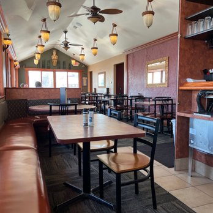
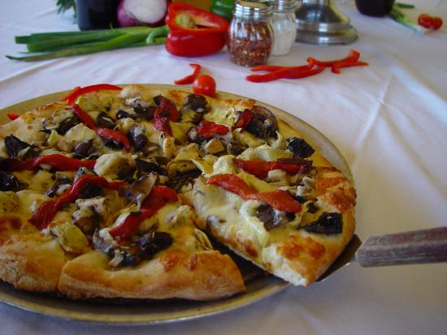
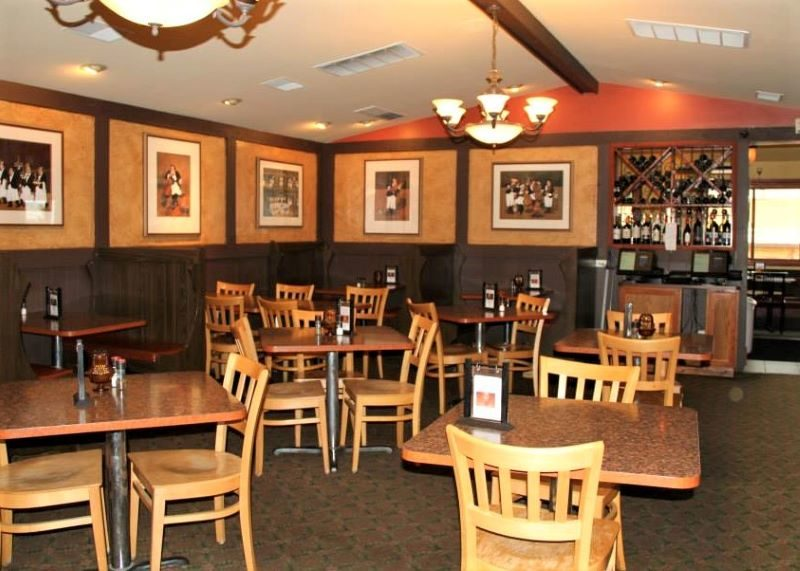

About Pompeii's
Source: yelp.com Source: tripadvisor.com Source: bluewater.org
{kind=link}
{kind=link}
4.5 Stars
Italian food, with cozy atmosphere. They can hold events of up to 120 people in a group. The menu includes gluten free options, and specialty pizzas.
Menu: pompeiis.net
Hours:
Monday - Wednesday:
11:00 am - 9:00 pm
Thursday:
11:00 am - 10:00pm
Friday & Saturday:
11:00 am - 11:00 pm
Sunday:
12:00 pm - 9:00 pm
Reviews
"I was really excited to get a wonderful tour of Port Huron and the Bluewater Bridge. What a beautiful area. On our way back to town, we almost passed your restaurant until Alex said, "They have the best pizza EVER".
I quickly found a parking spot, and she was right❣️👏🔥 Pizza chefs flipping pizza dough and yummy pizza and salad.
I'll be back
😋 WE got the Mediterranean 😋"
- Janice Bowyer, 3 weeks ago, 5 stars
"This is a very nice place if you are looking for delicious Pizza! 🍕 The restaurant is not very well maintained and not too expensive. They also offer a lot of sea food options and a quite a few beers on tap! 🍺 Overall, a very good to place for brunch/lunch/dinner if you are visiting Port Huron!"
- Gaurav Borgaonkar, 2 years ago, 5 stars
Contact
| Website: | pompeiis.net |
|---|---|
| Address: | 1120 Military Street, Port Huron MI 48079, USA |
| Phone: | 810-966-3400 |
| Email: | pompeiis_porthuron@yahoo.com |